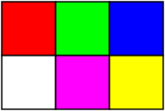

In this article we will see how images are stored in files, specifically BMP files. The Bitmap or BMP file is one of the simplest image format, it is widely used to store uncompressed images. Most notably, it is the default file format used by the now famous Microsoft Paint. After our deep dive into the image format, we will show how to implement a simple BMP image viewer in C with the SDL library.
What is an image? When we take a picture with a camera, it collects the light intensity and color of what is in front of it for a fraction of a second, freezing a moment in time onto its sensor. We call that collection of light an image. The image captured on the sensor is essentially a miniaturized version of the 3D scene seen from the point of view of the camera, it projects the 3D scene onto the camera sensor (2D).
The camera sensor does not have infinite resolution, in fact the sensor is actually a grid of tiny sensors capturing light at different positions. This divides the image into a 2D grid of pixels, where each pixel represents the color and intensity at a specific position.

Due to how the human visual system works, it turns out that we can encode any color using three numbers: R (Red), G (Green) and B (Blue). Those three numbers are often referred to as color channels and they form the RGB color space. This is easier to understand when thinking about mixing lights of different colors:
For example by mixing a red light with a green one we obtain a yellow light. We can get white by merging all the lights together and we get black when all the lights are closed. By mixing all three fundamental light colors we can make all the possible colors:
To be able to recreate any color using the R,G,B triplet we need to be able to change the intensity of each color channel, resulting in different shades of a given color:
In nature there is a whole continuous spectrum of colors but computers can only manipulate discrete numbers, therefore we need to assign a number to each color intensity. The most common color resolution or color depth is 24-bpp (bits per pixel), that is each color channel is encoded using 8-bit and fits in a single byte. This means that there is a maximum of 2^8 = 256 different values per channel. All three channels together allows us to define a total of 2^24 = 16 777 216 colors!
To store an image we need to know the value of each pixel and the dimensions of the image (width x height).
Say we have a 3x2 image of 6 pixels:

The simplest way to store this image in a file would probably be something like this:
1 2 3 4 5 6 7 8 | |
This is basically what the PPM (Portable PixMap) format does:
1 2 3 4 5 6 7 8 9 | |
The only difference is the presence of a file header. The first line is the file signature (used to recognize the file type):
P3 pixels are encoded as ASCII charactersP6 pixels are encoded as binary numbersThe second line is the width and height.
The third line is the maximum value of each pixel channel, usually 255 for 8-bit channels.
Any string starting with # is considered a comment.
The pixels data follow the header and are specified from left to right, top to bottom.
In the case of the ASCII format, triplets are stored as ASCII characters representing the underlying values and each channel is separated by a whitespace. There is usually one line per pixel. For example, a pink pixel (R,G,B = 255,128,255) will be encoded as:
1 | |
For the binary format, each pixel takes only 3 bytes and is encoded as a R,G,B triplet in this exact order. A channel is encoded as a 8-bit unsigned value and takes 1 byte. It should be obvious that the ASCII format is a lot more wasteful, a single pixel takes 12 bytes!
Note that the file header is always encoded as ASCII characters even in the binary format.
The BMP format is not much more complicated than PPM. While it does support various encoding and compression methods we will not go over those since in practice BMP is mostly used for uncompressed 24-bpp images.
The structure of the BMP file for the simplest case is as follow:

It consists of a file header followed by an info header. The pixels of the image are usually stored right after.
1 2 3 4 5 6 7 | |
The first two bytes of the file header define the file signature which should be "BM" in ASCII characters and is used to detect that the file is a BMP file.
The most important thing to get from this header is the offset in bytes where the image data is stored.
It also contains the size of the file and a few reserved bytes that we can ignore.
Note here that it is important to specify __attribute__((packed)) to make sure that the binary representation of the struct matches the spec exactly and does not contain any padding.
1 2 3 4 5 6 7 8 9 10 11 12 13 14 15 16 | |
Most of the fields of the info header are self explanatory but the size one needs further explanations.
There are multiple versions of the BMP file format, each version adds more functionalities and is specified with a different info header.
The size of the info header will allow us to determine the type of info header:
BITMAPCOREHEADER : the original headerBITMAPINFOHEADER : extends core header to support compression and color palettesBITMAPV4HEADER : extends info header to support color spacesBITMAPV5HEADER : extends v4 header to support ICC color profilesWe will only handle BITMAPINFOHEADER as it is the most common by far.
Since we assume that the image is 24-bpp uncompressed:
compression = 0bpp = 24You might have assumed that image_size = width x height x 3 bytes but as we will soon see it might be a bit more than that since the image data might contain some padding to make it 4-byte aligned.
Contrary to common intuition, the pixels in BMP are stored from left to right but starts from the bottom first. This means that we will need to flip the image vertically to show it correctly on screen. Each pixel takes 3 bytes and is encoded as a R,G,B triplet in the B,G,R order.
Some padding bytes might be added to each row of the pixels grid to make it 4-byte aligned, meaning that the number of bytes of each row (also known as the pitch) must be a multiple of 4 bytes. This is done to avoid making unaligned memory accesses which could slow down the CPU.
The pitch of the image is usually width * 3 but we must
round it up to the next 4 bytes to ensure 4-byte alignment.
This can be computed as:
1 2 3 4 5 | |
The image_size from the info header can then be computed as pitch * height.
All together we can load a BMP image very easily without needing any external libraries:
1 2 3 4 5 6 7 8 9 10 11 12 13 14 15 16 17 18 19 20 21 22 23 24 25 26 27 28 29 30 31 32 33 34 35 36 37 38 39 40 41 42 43 44 45 46 47 48 49 50 51 52 53 54 55 56 57 58 59 60 | |
Filling the buffer with pixels (lines 30 to 50) is a bit more involved and deserves more explanations.
The BMP pixels are stored in the RGB24 format but a screen usually expects a ABGR8888 format. RGB24 is tightly packed into 3 bytes (B,G,R) while ABGR8888 is stored as 4 bytes (R,G,B,A). The last one is reserved for the alpha channel that can handle transparency but we will not support it in our BMP implementation.
To convert it we need to allocate a temporary buffer tmp to hold the pixels stored bottom to top, convert it to ABGR8888 and flip the image at the same time in image->pixels. The image->pixels array is the final pixels buffer that will be used directly by our image viewer to be displayed on screen.
Now that we understand the format, we can write a simple image viewer that is able to open BMP images. We choose to use the SDL2 library to open a window in which we can show the image. The basic code template for a typical SDL2 app should be something like this:
1 2 3 4 5 6 7 8 9 10 11 12 13 14 15 16 17 18 19 20 21 22 23 24 25 26 27 28 29 30 31 32 33 34 35 36 37 38 | |
An SDL app can be compiled using gcc -lSDL2 app.c -o app.
To transform this app into an image viewer we must do three things:
For the first two steps we load the image and create a SDL surface for it during init:
1 2 3 4 5 6 7 8 9 10 | |
We must also make sure to free it after use:
1 2 3 | |
Once the image has been copied to the surface properly, we can blit it to the window's surface:
1 2 3 4 5 | |
That's it! We now have an image viewer that can read BMP images! Notice that due to the simplicity of the BMP format we need very few lines of code to implement a basic image viewer.
In this article we have omitted proper errors handling to keep the code short, please see the full source code available on GitHub for more details.